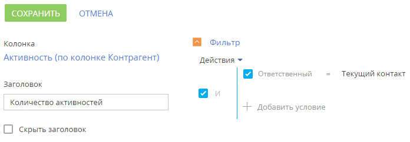

Данные в разделах системы и на некоторых деталях на страницах представлены в виде реестров. Реестр представляет собой список записей, каждая из которых состоит из набора полей.
В списочном представлении данные отображаются в виде простой таблицы, где каждой записи раздела соответствует только одна строка. Такое представление обычно используется для разделов, в которых для поиска записей достаточно кратких сведений о них. Например, для базы знаний.
В плиточном представлении можно отобразить больше информации о записях разделов. Данные в плиточном преставлении выводятся в несколько строк. Только в этом представлении в реестре могут отображаться миниатюры картинок, например, фото контакта или логотип контрагента.
При открытии страницы записи реестр отображается в дополнительном вертикальном представлении. Данные реестра отображаются в одну колонку, при этом каждому полю записи соответствует отдельная строка вертикального реестра. При переходе от записи к записи вертикального реестра справа отображается детальная информация по выбранной записи.
В Creatio предусмотрена возможность редактирования записей в самом реестре, без перехода к их страницам. Редактируемый реестр используется в системе для тех сущностей, которые необходимо редактировать быстро и часто.
Значения email- и веб-адресов отображаются в реестре в виде ссылок. При нажатии на веб-адрес в соседнем окне браузера откроется указанная веб-страница. При нажатии на email-адрес откроется окно создания нового сообщения в почтовом клиенте, который используется по умолчанию.
Также некоторые другие значения отображаются в реестре в виде ссылок, позволяя быстро переходить по записям системы. Например, в разделе Активности значение поля Ответственный является ссылкой, благодаря чему можно из реестра активностей перейти к просмотру страницы ответственного по той или иной активности.
Внешний вид реестра, набор отображаемых полей и сортировку данных вы можете настроить индивидуально. Вы также можете отобразить сводную информацию по записям раздела. Для настройки реестра используйте меню Вид (Рис. 1).
Настроить колонки
Любой реестр может быть настроен индивидуально для каждого пользователя системы. Вы можете определить перечень отображаемых колонок, их ширину и стиль.
В реестре можно отобразить колонки не только текущего, но и связанных объектов. Например, в реестре раздела Контрагенты вы можете отобразить основной контакт каждого контрагента, а также его должность.
Кроме того, в реестре можно отобразить агрегирующие колонки, отображающие сводную информацию по подчиненным объектам. Например, для контрагентов можно рассчитать количество активностей по каждой компании, для контактов — дату последнего звонка по каждому клиенту и т. д.
Название связанной колонки формируется по принципу “Объект.Колонка”, например, “Основной контакт.Должность” или “Контрагент.Город”. Название агрегирующей колонки формируется по принципу “Функция(Объект (как связан)).Колонка”. Например, в колонке “Максимум(Активность (по колонке Контакт).Завершение)” реестра контактов отображается дата последней активности по каждому клиенту. Заголовок колонки, отображаемый в реестре, можно настроить индивидуально.
Страница настройки колонок открывается по команде Настроить колонки меню кнопки Вид.
Для добавления новой колонки нажмите кнопку  :
:
-
в свободной ячейке. В списочном представлении эта кнопка срабатывает только при наличии в строке пустых ячеек. В плиточном представлении при отсутствии пустых ячеек в строке по нажатию кнопки
 будет добавлена новая строка.
будет добавлена новая строка. -
возле границы любой из колонок. Для этого выделите колонку и нажмите кнопку
 возле любой из ее границ, в зависимости от того, какое положение должна занимать новая колонка относительно выделенной (Рис. 2).
возле любой из ее границ, в зависимости от того, какое положение должна занимать новая колонка относительно выделенной (Рис. 2).
Для настройки параметров отображения колонки выберите ее и нажмите . На открывшейся странице вы сможете изменить или скрыть заголовок колонки, указать функцию и фильтры для расчета агрегирующей колонки, выбрать стиль отображения.
Для скрытия колонки из реестра выделите ее мышью и нажмите . Если в плиточном представлении после удаления колонки в строке не остается больше колонок, то строка скрывается.
Для изменения ширины колонки наведите курсор мыши на правую границу колонки, и когда граница станет голубой, захватите и потяните в нужную сторону (Рис. 3). Если в строке нет пустых ячеек, то расширение или сужение колонки повлечет за собой изменение ширины соседних колонок.
Для перемещения колонки выделите ее и, удерживая левую клавишу мыши, перетяните на новое место (Рис. 4).
Для сохранения настройки колонок нажмите кнопку Сохранить. При этом изменения будут сохранены для текущего пользователя системы. Если необходимо сохранить настройку колонок для всех пользователей системы, то выберите команду Сохранить для всех пользователей кнопки Сохранить. Команда Сохранить для всех пользователей доступна, если администратором системы пользователю предоставлено право на выполнение системной операции Настройка реестра для всех пользователей.
Добавить колонку текущего объекта
Рассмотрим последовательность действий для добавления в реестр колонок текущего объекта.
Для этого:
-
Перейдите в раздел Контакты.
-
В меню кнопки Вид выберите команду Настроить колонки.
-
На странице настройки колонок нажмите кнопку
 .
. -
Выберите колонку, которую необходимо отобразить, например, “Город”. Нажмите кнопку Выбрать (Рис. 5).
-
В области управления колонками выделите мышью добавленную колонку и настройте для нее необходимую ширину (Рис. 6).
Рис. 6 — Настройка ширины колонки -
Аналогичным образом добавьте колонку Департамент. Оцените результат в режиме предпросмотра (Рис. 7). Нажмите кнопку Сохранить.
Добавить агрегирующую колонку
Вы можете отобразить в реестре агрегирующие колонки по связанным объектам. Например, для объекта “Контрагент” можно получить сводную информацию по связанному объекту “Активность”.
Для этого:
-
Перейдите в раздел Контрагенты.
-
В меню кнопки Вид выберите команду Настроить колонки.
-
На странице настройки колонок нажмите кнопку .
-
В открывшемся окне выбора колонки:
-
Нажмите кнопку + возле наименования объекта.
-
В добавившемся поле выберите объект с обратной связью, например, “Активность (по колонке Контрагент)”.
-
В поле Колонка укажите колонку связанного объекта, например, “Тип”.
-
Нажмите кнопку Выбрать (Рис. 8).
-
-
На открывшейся странице укажите параметры отображения выбранной колонки (Рис. 9).
Рис. 9 — Страница настройки колонок реестра -
Введите заголовок колонки для отображения, например, “Количество активностей”.
-
Укажите условие для фильтрации исходных данных для расчета. Например, чтобы в колонке отображалось количество активностей, по которым заданный пользователь является ответственным, установите фильтрацию Ответственный: “Текущий контакт”.
-
Нажмите кнопку Сохранить на странице настройки отображения колонки.
-
Сохраните настройку колонок.
В результате в реестре контрагентов будет отображаться количество активностей выбранного пользователя по каждому контрагенту.
Настроить сортировку записей
Для удобства работы с данными записи в разделе могут быть отсортированы по возрастанию или убыванию значений выбранной колонки.
Сортировка записей выполняется с помощью команды Сортировка меню кнопки Вид. В подменю команды отображаются те же колонки, что и на странице раздела. Рядом с названием колонки, по которой выполнена сортировка, указан способ сортировки — по возрастанию или по убыванию. Например, записи раздела Активности можно отсортировать по убыванию значений колонки Завершение (Рис. 10).
Чтобы сортировать записи по колонке, выберите команду Сортировка меню кнопки Вид. Затем выберите нужную колонку. При повторном выборе колонки порядок сортировки изменится. Для того чтобы необходимая колонка отображалась в меню, настройте колонки реестра.
В списочном представлении реестра предусмотрена дополнительная возможность — быстрая сортировка записей кликом по заголовку колонки (Рис. 11).
Настроить итоги по колонкам
Если вам необходимо получить сводную информацию по колонкам раздела, то используйте итоги. Управление итогами осуществляется по команде Настроить итоги меню кнопки Вид (Рис. 12).
Настроенные итоги отображаются в правой верхней части раздела (Рис. 13).
При помощи области итогов вы можете рассчитать:
-
Общее количество записей (для всех колонок). Например, в разделе Контакты можно рассчитать количество зарегистрированных клиентов.
-
Минимальное либо максимальное значение в колонке (для числовых колонок и колонок даты и времени). Например, в разделе Контрагенты можно определить последнюю дату регистрации новой компании.
-
Сумму либо среднее значение по колонке (для числовых колонок). Например, в разделе Активности можно отобразить среднюю продолжительность активностей.
Если записи в разделе отфильтрованы (например, выбрана какая-либо группа или применен один либо несколько фильтров), то расчет итогов производится по отфильтрованным записям. Например, вы можете рассчитать количество клиентов из Москвы, если настроите соответствующий фильтр и отобразите итоги (Рис. 14).
Рассчитать количество записей
Чтобы рассчитать количество записей в разделе:
-
Перейдите в нужный раздел системы.
-
В меню Вид выберите команду Настроить итоги.
-
На открывшейся странице установите признак Отображать количество записей .
-
Нажмите кнопку Сохранить для сохранения пользовательской настройки.
-
В результате в области итогов отобразится общее количество записей раздела.
Рассчитать итоги по значениям колонок
Настройку итогов по значениям колонок объекта рассмотрим на примере отображения средней продолжительности активностей. Для настройки:
-
Перейдите в нужный раздел, например, Активности.
-
В меню Вид выберите команду Настроить итоги.
-
На открывшейся странице нажмите кнопку Добавить.
-
Выберите из списка числовую колонку, по которой необходимо отобразить итоговую информацию, например, “Продолжительность (минут)”. Нажмите кнопку Выбрать (Рис. 15).
-
На странице настройки укажите параметры отображения итоговой информации:
-
Выберите из списка функцию для подсчета данных, например, “Среднее”.
-
Внесите заголовок, который будет отображаться в области итогов, например, “Средняя продолжительность, минут”, и нажмите кнопку .
-
Нажмите кнопку Сохранить для сохранения пользовательской настройки (Рис. 16).
В результате в области итогов раздела Активности отобразится средняя продолжительность по активностям.
-
 и выберите необходимый подчиненный объект из списка.
и выберите необходимый подчиненный объект из списка.Если необходимо отобразить данные только по выбранным записям, то дополнительно установите в разделе фильтр или выберите предварительно настроенную группу. Например, укажите ответственного, категорию активности и период, за который вы хотели бы рассчитать результат.
Отменить отображение итогов
Отменить отображение итоговой информации можно нажатием кнопки справа от записи в области итогов (Рис. 17).
Часто задаваемые вопросы по реестру
Какое максимальное количество колонок можно вывести в реестр раздела?
Реестр раздела может отображаться в списочном либо в плиточном представлении.
Максимальное количество колонок, которые можно вывести в списочном представлении — 24. Однако при выведении значительного количества колонок реестр не будет информативным, поскольку видимая область реестра ограничена размером монитора пользователя. К тому же ширина колонки адаптируется под разные разрешения мониторов. И для небольших мониторов (768px, 1024px) ширины колонки может быть недостаточно для отображения содержащейся в ней информации.
Количество колонок, которые можно вывести в плиточном представлении реестра, не ограничено. Однако в случае выведения значительного количества колонок быстродействие системы может снизиться из-за увеличения времени на загрузку данных из БД.
Рекомендуем продумывать, какая именно информация должна отображаться в реестре, и выводить в него оптимальное количество колонок.
Как быстро обновить список записей реестра, не перезагружая страницу полностью?
При выполнении изменений в реестре (например, при изменении условий фильтрации или сортировки записей реестра) может возникнуть необходимость быстро обновить список реестра, не выполняя перезагрузку всей страницы по кнопке F5 либо с помощью команды “Reload”. Для обновления данных достаточно нажать на название раздела после выполнения каких-либо действий в реестре (Рис. 18).
Почему при экспорте отображается сообщение “У вас недостаточно прав для выполнения операции”?
Возможно, у вас не настроены права доступа на системную операцию Экспорт реестра.
Как выгрузить содержимое деталей?
Данные с деталей можно выгрузить по команде Экспорт в Excel, доступной из меню действий детали (Рис. 19).